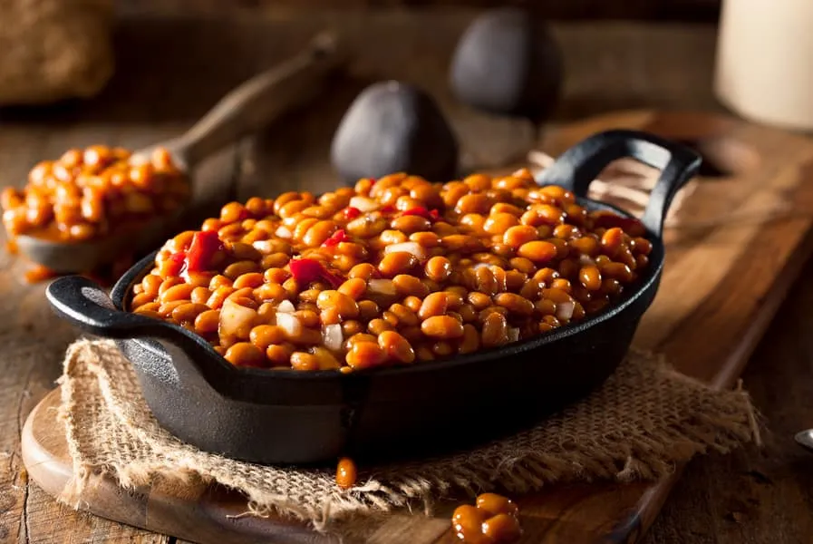

Feijão

Descrição
Ele é praticamente uma unanimidade no prato do brasileiro: não há quem
dispense uma bela porção de feijão! Pra você que ainda não sabe como
cozinhar feijão de maneira simples e prática, confira com a gente como
fazer essa receita incrível!
Ingredientes
- 1 xícara (chá) de feijão-carioquinha cru (170 g)
- 1 sachê de tempero pronto
- 1 folha de louro
- 2 dentes de alho amassados
- 4 xícaras (chá) de água (800 ml)
- 1 colher (chá) de sal
- 1 colher (sopa) de óleo
Passo a Passo
- Deixe o feijão de molho por 2 horas.
- Escorra e transfira para uma panela de pressão.
- Junte a água, o tempero pronto, o sal e o louro.
-
Deixe cozinhar, em fogo baixo, por 20 minutos após o início da fervura.
-
Em uma frigideira média, coloque o óleo e leve ao fogo alto para
aquecer. Junte o alho e refogue rapidamente até dourar.
-
Adicione uma concha dos grãos do feijão cozido e amasse-os com uma
colher.
-
Volte o refogado à panela de pressão e deixe cozinhar, com a panela
semi-tampada, por 10 minutos, ou até encorpar ligeiramente.
- Retire do fogo e sirva em seguida.